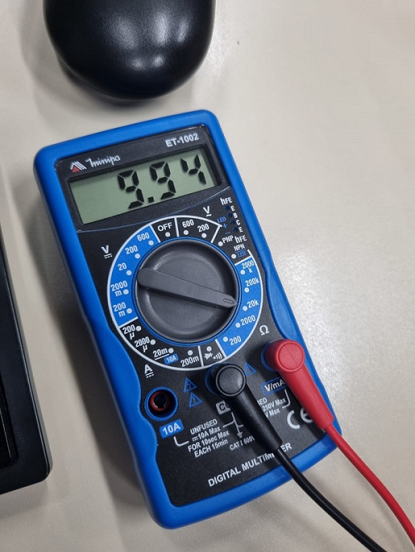

Medida do potênciometro
A medida corresponde a resistência em K(1000), ou seja, 9,94 corresponder a 9940Ω
Medidas dos 5v passando pelo LED e pelo LDR respectivamente

O valor demonstrado pelo Multimetro é quantidade de volts(V) que está passando pelo LED durante sua operação, por ter mais de um LED e um LDR, seu valor será diferente que o padrão, 5v.

Seguindo a mesma lógica, o valor apresentado pelo multimetro é a quantidade de volts(V) passando pelo LDR, como ele é principal fator, a quantidade de volts passada por ele é maior do que os LEDS
Print do circuito no Tinkercad

Fonte:Tinkercad